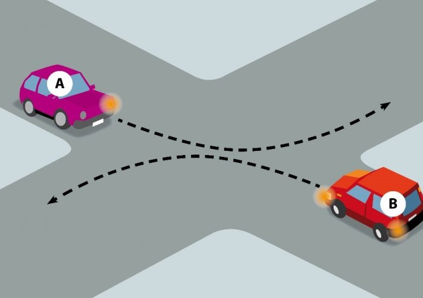

Auto A en B moeten allebei links afslaan. Ze kruisen op dit kruispunt vóór elkaar. Is dat correct?

- Dat is correct. Ze moeten vóór elkaar kruisen, in het midden van het kruispunt.
- Dat is correct, maar ze mogen net zo goed achter elkaar kruisen op dit kruispunt.
- Dat is fout. Het is verplicht om achter elkaar te kruisen op dit kruispunt.
Op kruispunten moet je rechts kruisen. Je rijdt dus ACHTER elkaar door. Soms zijn er wegmarkeringen aangebracht die aanduiden dat je links moet kruisen. Alleen in dat geval kruis je voorlangs.